来源：https://vpbq24ngx4.feishu.cn/docx/GkXjd6NrVoLQhgxGXEmcFbndnSM
本篇文章：
1.星球搜索发现关于开发“飞书字段捷径插件”的帖子比较少，我来补充个
2.本次主要记录分享一下，项目中遇到的实操问题，通过开发“飞书字段捷径插件”来节省资源的案例。
3.本次主要分享使用cursor开发飞书字段捷径插件的流程，不是做具体业务的分享。
看完本篇，你可以学习到一个飞书字段捷径插件开发到上架使用的全流程
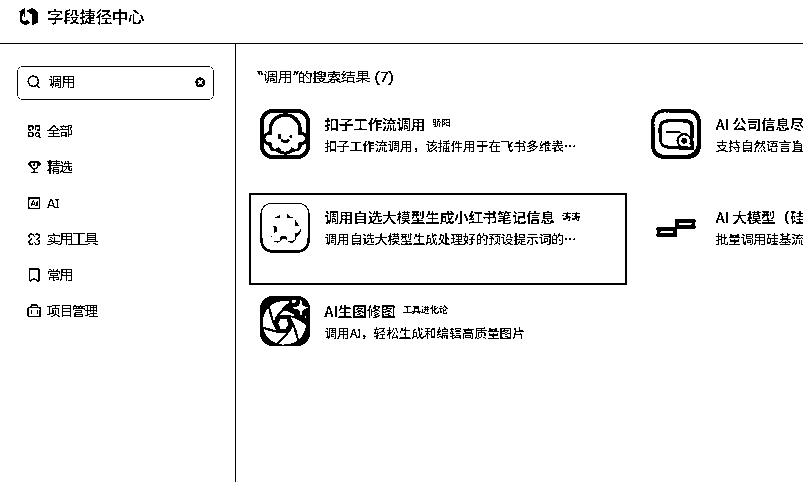
测试小红书虚拟资料项目的时候，
我使用了飞书多维表格来管理笔记，
其中的标题、文案、以及标签、
都是通过图片转文字后调用coze平台来自动生成返回多维表格里的
非常方便、可以在coze里进行复杂数据操作：
可以在coze里调用爬虫脚本爬取关键词的下拉长尾词
然后调用大模型API生成文案、标题、下拉词标签等
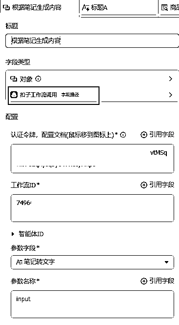
但是、等笔记数量上来的时候发现调用
coze的资源点不够用了！
开了会员也只是每天可用1000点。
不太够用。除非开团队版或者企业版，
但是这个价格实在没有性价比。
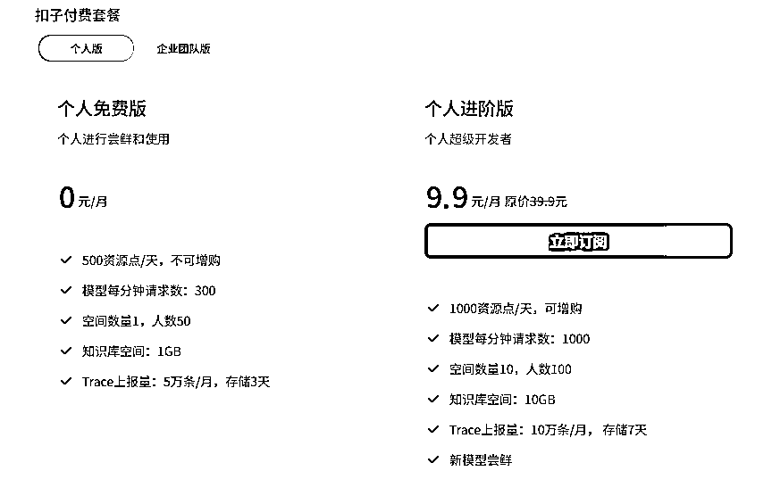
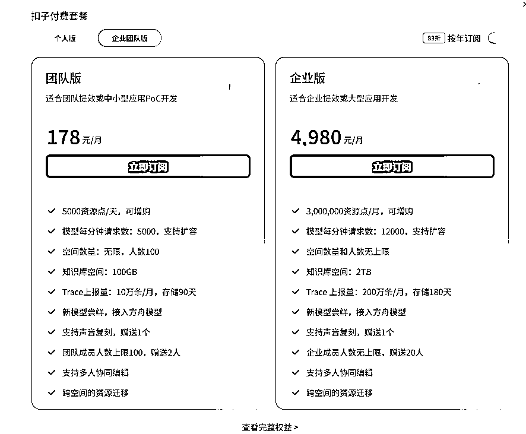
所以为了扩充这个上限。
我决定绕开coze的平台自制一个飞书“字段捷径”插件来复刻coze上的工作流。
因为飞书的插件上架后只可以免费发布在飞书的服务器上，
可以随便调用，就不需要管coze的调用资源限制了。
有了文档，其实使用curosr开发就简单非常多了。
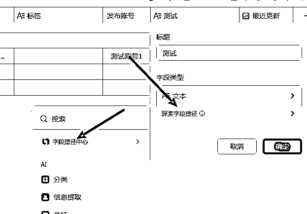
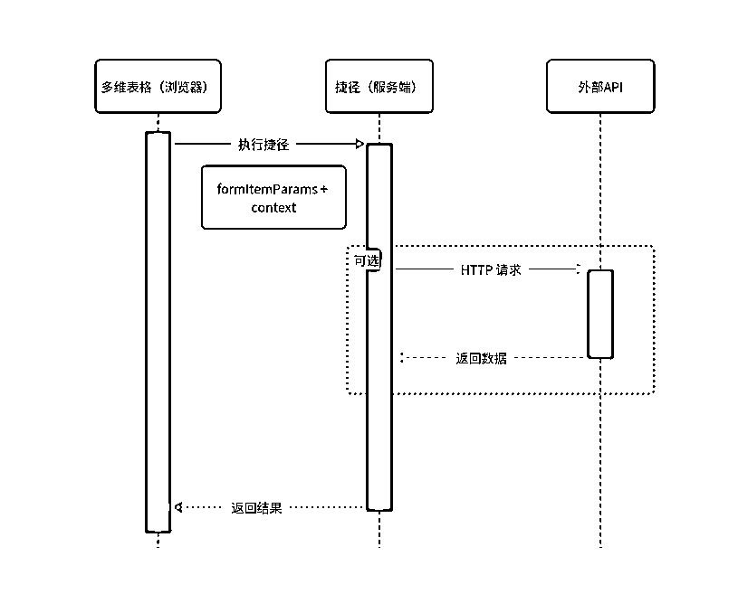
这个助手是官方提供给开发者调试字段捷径用的
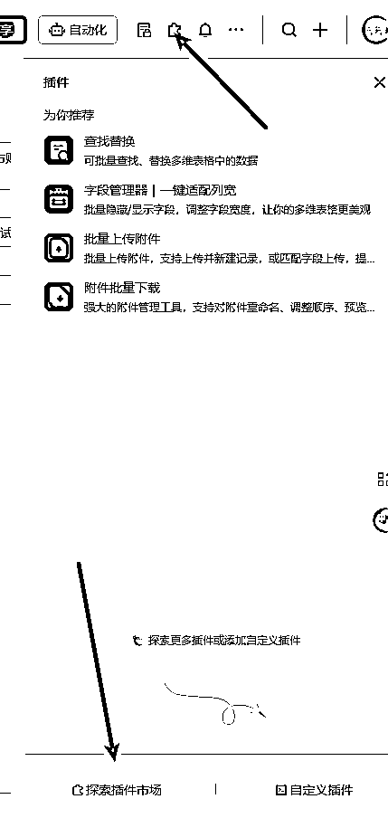
本地环境最好就使用与线上相同的环境配置，
这是线上的运行环境：
Nodejs版本：14.16.0 +
按照开发文档，拉取用于测试demo案例
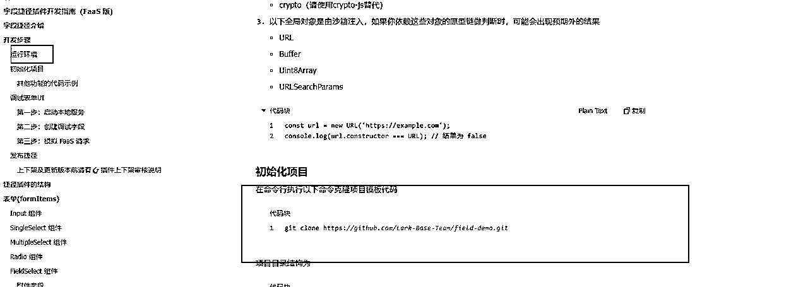
git clone https://github.com/Lark-Base-Team/field-demo.git
cd .\field-demo\ # 安装依赖 npm install # 启动本地服务 npm run start
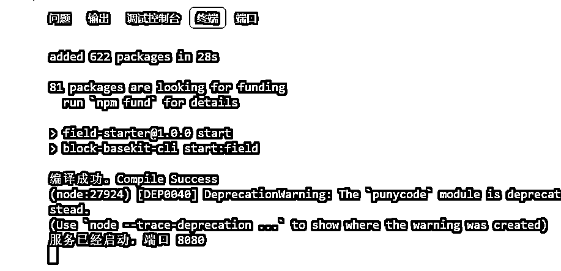
基于 复制副本，然后点击右侧边栏的「字段捷径调试助手」，或者直接在侧边栏插件市场中搜索“字段捷径调试助手”，然后运行，pin到侧边栏即可。
在飞书多维表格上，
简单的测试一下，
发现没问题
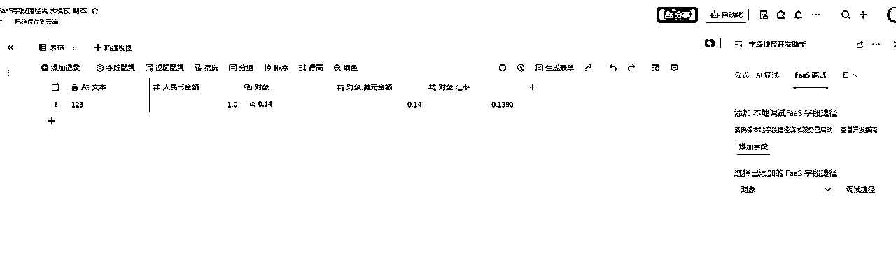
然后我们就可以开始使用cursor进行开发了
方式1：
方式二：
需要用的的时候就@DOC 下
直接复刻他的逻辑和界面参数
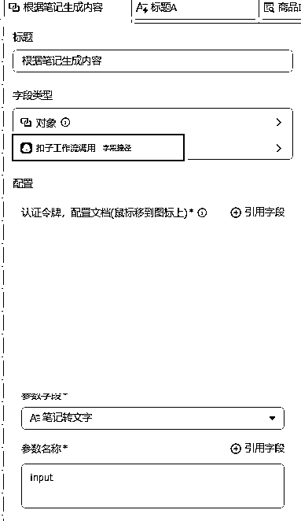
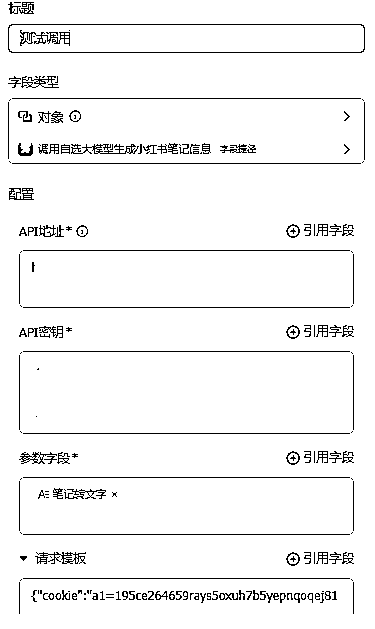
先和curosr沟通开发传入的参数，
根据自己的业务需求，确定所需的传入参数，
要几个，哪些参数是必须的等。直接让cursor改就行
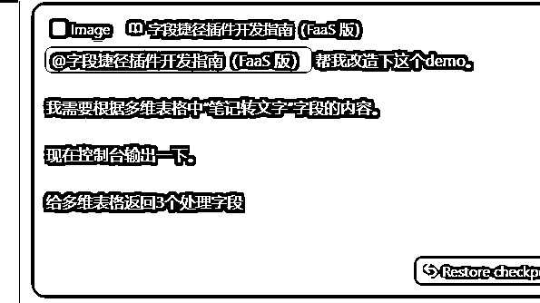
界面的传入参数等确认完后
就可以编写具体的业务流程了，
也就是把coze里业务工作流一步步搬运过来。
注意最好一个功能一个进行搬运，然后一个个功能进行测试
不要一口气全让cuosor写。
这样很难完成的。
比如调用大模型API
我这里找了一个之前用剩下的中转API进行测试调用
⚠️：让cursor编写调用大模型API的时候，
记得把api网站提供的调用测试用例也复制发给cursor。
这样基本一次两次调试就能成功了
比如根据写好的提示词生成搜索关键词
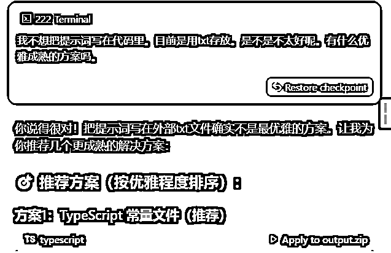
因为之前我已经coze里已经在提示词、爬虫脚本、格式处理都跑通了，
所以开发的过程我直接复制的对应的代码/文案生成提示词等，发给cursor很顺利的简单调试都能实现
打包自己的代码，填写飞书提供的表单就可以了，
飞书官方会自动拉群拉你
通过1-2个工作日审核完就能上架使用了
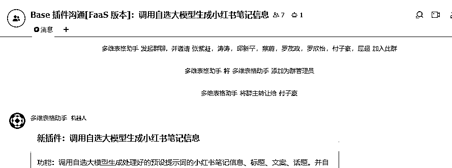
发布插件： 要发布自己编写的字段捷径插件供自己使用，请遵循以下步骤，基于知识库中的文档信息 1. 打包插件：在项目目录下执行 `npm run pack`（确保Node.js版本为14.16.0或更高），生成output/output.zip文件。 - 示例命令：`npm run pack` - 输出文件路径：`output/output.zip` 2. 上传文件：将生成的output.zip文件上传到指定位置。 3. 提交发布表单：访问并填写 多维表格捷径插件表单 。在表单中： - 选择发布范围为“公司内使用”（适用于个人或团队内部使用）。
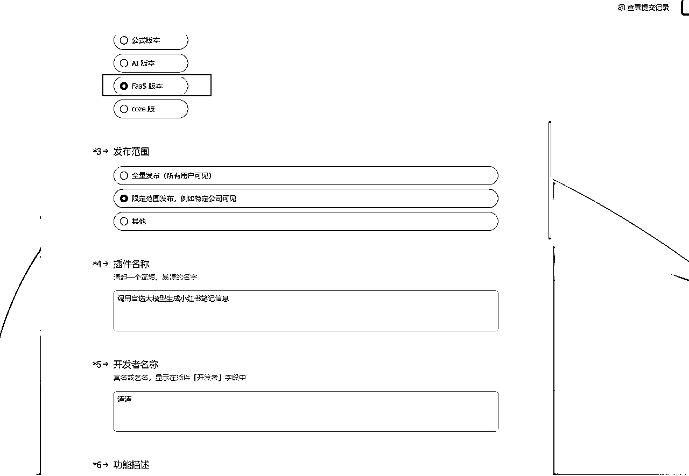
「如果觉得本次分享对你有所启发，别忘了回星球给我点个赞👍」